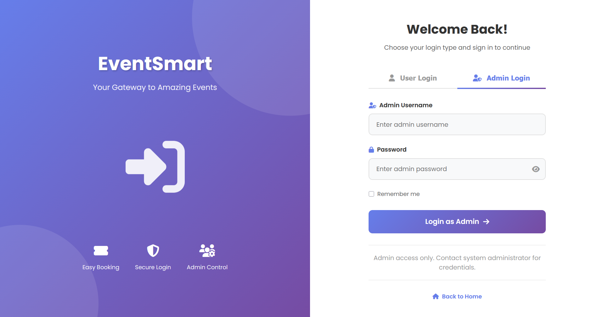
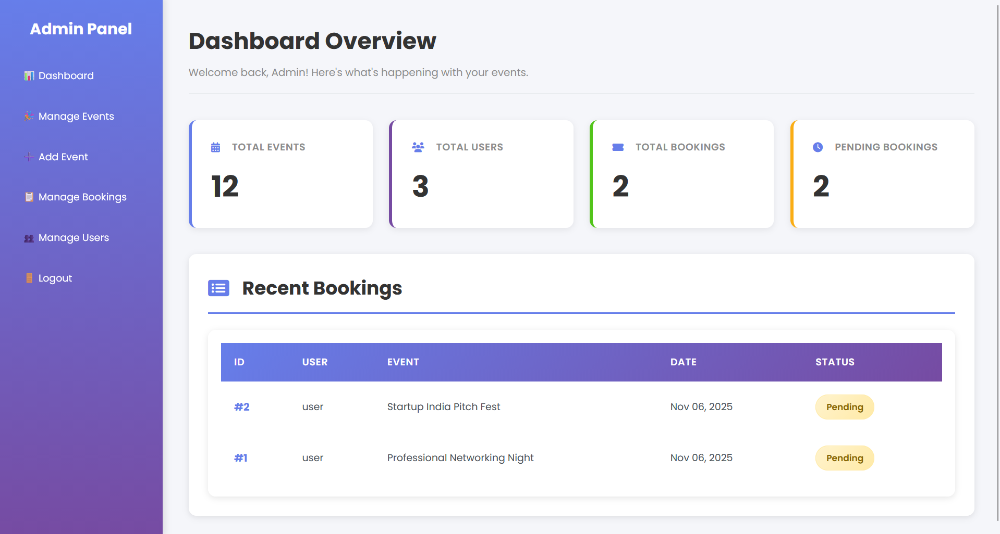
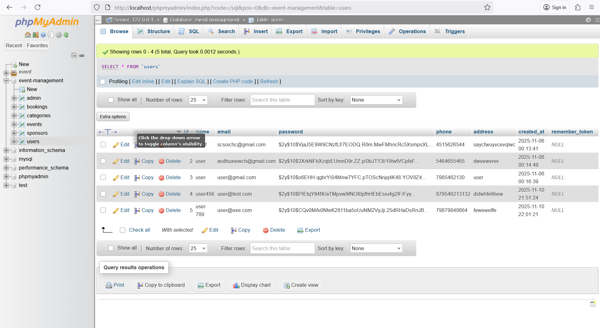

Mili Patel
Computer Engineering V — Pandit Deendayal Energy University
Expected Graduation: 2027 · CGPA: 8.84
"Aspiring developer passionate about creating innovative web solutions and analyzing data to inform decisions."
View Portfolio →Table of Contents
- 1Introduction and Learning Philosophy
- 2Resume / Curriculum Vitae
- 3Interdisciplinary Projects and Research
- 4Advanced Skill Development and Mastery
- 5Collaborative and Leadership Experiences
- 6Global Awareness and Ethical Considerations
- 7Future Aspirations and Professional Development
- 8SWOT Analysis
- 9Conclusion and Self-Assessment
- 10Testimonial
- 11Contact
Introduction and Learning Philosophy
My journey in computer engineering began with a fascination for how technology shapes modern life. Throughout my academic career, I've developed a strong foundation in web development, database management, and software engineering principles. My core values center around continuous learning, innovative problem-solving, and creating practical solutions that address real-world challenges.
My learning philosophy is rooted in hands-on experience combined with theoretical understanding. I believe that the best way to master technology is through iterative development—building, breaking, debugging, and improving. This approach has guided my work on projects like the Smart Event Management System, where I integrated frontend and backend technologies to create a functional web application using PHP, MySQL, HTML, and CSS with XAMPP as my local development environment.
What drives my curiosity is the intersection of user needs and technical capabilities. I approach technical challenges by first understanding the problem domain, researching best practices through documentation and online resources, and then implementing solutions with security and scalability in mind. My intellectual framework emphasizes the importance of clean code, proper documentation, and continuous testing—principles that will serve me throughout my career.
The philosophical underpinnings of my academic pursuits stem from a belief that technology should empower people and solve meaningful problems. Whether I'm debugging authentication errors late at night or designing database schemas, I remain committed to understanding not just the "how" but also the "why" behind every technical decision. This mindset of persistent inquiry and self-directed learning has shaped my evolution from a student learning basic HTML to a developer capable of building complete web applications.
Personal Interests:
- Backend development and authentication systems
- Clean UI designing and responsive layouts
- Database architecture and optimization
- Python scripting and data visualization
- Cybersecurity and secure coding practices
📚 Education
Pandit Deendayal Energy University
Computer Science Engineering — Semester V
Expected Graduation: 2027
Relevant Coursework
- Web Technologies & Development
- Database Management Systems
- Python Programming
- Network Security & Cryptography
- Exploratory Data Analysis (EDA)
💻 Technical Skills
- Python, C
- SQL, Pandas, NumPy
- Data Visualization (Matplotlib)
- HTML, CSS, JavaScript
- PHP, MySQL
Tools & Platforms
- XAMPP, phpMyAdmin
- Git & GitHub
- VS Code
🎯 Soft Skills & Hobbies
- Problem-solving & Debugging
- Teamwork & Communication
- Time Management
- Hobbies: Dancing, Drawing, Digital Art
🚀 Major Projects (summary)
- Smart Event Management System (PHP / MySQL) — authentication, admin dashboard, event registration
- Sales Data Analysis with Pandas (Python) — ETL, EDA, visualizations, reporting
- Various group mini-projects, automation scripts, and college assignments
Project 1 — Smart Event Management System
Overview: Developed a web-based platform for managing events with secure authentication, role-based admin dashboard, event registration, and MySQL backend. Built with PHP, HTML/CSS and tested on XAMPP.
Objectives
- Secure login with password hashing (bcrypt)
- Role-based access control for admin & users
- Responsive UI & normalized database design
📸 Visuals and Prototypes:
Login interface with form validation
Admin dashboard showing event management controls
MySQL database schema with normalized tables
💾 Code Artifact - Authentication Logic:
Key Code (authentication snippet)
Project 2 — Sales Data Analysis with Pandas (Python)
Overview: Performed end-to-end analysis on a retail sales dataset to extract insights and build visual dashboards. Tools: Python, Pandas, Matplotlib / Seaborn (for prototyping), Jupyter Notebook.
Objectives
- Clean and preprocess raw sales data (dates, missing values, categorical normalization)
- Perform exploratory data analysis (monthly trends, top products, category performance)
- Create visualizations for stakeholders (sales over time, category share, top products)
- Export summary reports (CSV / charts)
Methodology
- Data cleaning: parse dates, fill missing sales values with 0 or median, normalize product categories
- Feature engineering: created `year_month`, `week_of_year`, and `sales_per_customer`
- Aggregation: groupby for monthly and category-level insights
- Visualization: line charts for trend, bar charts for category, pie chart for market share
Key Code Snippet (Pandas)
Outcomes
- Identified seasonal peaks (Oct–Dec) with ~25% higher sales
- Top 3 products contributed 48% of revenue
- Category-level insights helped inform promotional planning
Advanced Skill Development and Mastery
1. Technical Proficiencies - Programming Languages
Demonstrated advanced proficiency in PHP and MySQL through the development of a complete web application with authentication, database integration, and security features. My code emphasizes readability, proper commenting, and adherence to best practices.
Code Artifact - Clean, Documented PHP:
2. Data Analysis Tools and Database Optimization
Applied database normalization principles (1NF, 2NF, 3NF) to create efficient schemas for the event management system. Developed understanding of entity relationships, primary/foreign key constraints, indexing strategies, and query optimization techniques using EXPLAIN statements in MySQL.
3. Leadership and Communication Skills
Created comprehensive documentation for projects including README files, code comments, and user guides. Presented technical concepts through Google Slides presentations for academic assignments. Effectively communicated complex technical problems when seeking guidance, demonstrating ability to articulate challenges clearly and ask focused questions.
4. Creative Competencies - Design Thinking
Applied user-centered design principles to create intuitive interfaces for the event management system. Made deliberate design choices regarding color schemes, layout organization, and navigation flow to enhance user experience. Demonstrated artistic expression through CSS styling while maintaining functionality and accessibility.
- NPTEL — Web Technologies / Programming
Learned fundamentals of frontend/backend development, HTTP, XML, PHP basics, and SQL integration. Completed weekly assignments and proctored exam with distinction. - Python for Everybody — Online Course
Covered Python basics, file handling, regular expressions, API usage, and introductory data analysis. Built mini-projects including calculators, parsers, and visualization scripts. - Data Analysis Hands-On Training
Worked with Pandas, NumPy, and Matplotlib to clean, process, and visualize datasets. Completed end-to-end EDA on retail sales data and created summary reports. - Cybersecurity Essentials (Intro)
Explored secure coding practices, hashing, encryption basics, SQL injection prevention, and OWASP-based guidelines for developing safe applications.
I have collaborated on numerous team-based academic projects where I often took responsibility for backend development, documentation, or database design. My leadership style focuses on clear communication, practical timelines, and ensuring every team member contributes confidently.
Key Leadership Contributions
- Conducted weekly sprint reviews, task delegation, and progress tracking during group projects.
- Led discussions on database normalization and security-focused schema design.
- Helped teammates debug PHP, SQL queries, and JavaScript errors during project deadlines.
- Provided demonstrations and walkthroughs of our project workflow during classroom presentations.
- Encouraged an inclusive environment where everyone could share coding ideas freely.
These experiences strengthened my teamwork capabilities and helped me understand the importance of empathy, patience, and clarity—skills essential for future technical leadership roles.
In today’s digital world, data privacy has become a global priority as organizations collect increasing amounts of user information. Understanding how data is stored, processed, and shared is essential to building responsible applications.
While creating the Smart Event Management System, I implemented several privacy-focused practices:
- Password hashing using secure algorithms such as bcrypt.
- Minimal data retention — storing only the essential information needed for login and events.
- Prepared statements to defend against SQL injection and malicious input.
- User consent visibility before submitting forms or storing data.
I also explored modern privacy laws such as GDPR and India’s DPDP Act, which stress transparency, user rights, secure storage, and ethical data processing. These principles guide how I approach projects and reinforce why privacy must be respected at every step of development.
Ethical responsibilities in software engineering extend beyond writing clean code—they involve ensuring fairness, transparency, and safety for every user interacting with the product. I adopt a cautious, security-first mindset when developing any application.
Ethical Practices Followed
- 🔒 Using hashed passwords instead of storing plain text credentials.
- 🛡️ Implementing SQL prepared statements to prevent database attacks.
- 📉 Reducing unnecessary data collection to respect user privacy.
- 📝 Writing transparent disclaimers for how user data is handled.
- ✔️ Testing features thoroughly before deployment to avoid user-impacting errors.
These steps reinforce my belief that technology should help people—not put them at risk. Ethical coding is not just good practice; it is a moral obligation.
My long-term objective is to become a skilled Software Developer or Data Analyst working on meaningful, impactful digital solutions. To reach that point, I am actively expanding my skill set and building stronger project foundations.
Short-Term Goals (Next 6–12 Months)
- Learn React.js and Node.js for full-stack development.
- Understand REST APIs and integrate them into real projects.
- Strengthen SQL knowledge and explore advanced database optimization.
- Build 2–3 strong portfolio projects with clean UI and secure backend.
- Apply for internships to gain industry experience.
Long-Term Goals
- Master cloud technologies such as AWS / Azure.
- Learn containerization tools (Docker, Kubernetes).
- Become proficient with DevOps workflows.
- Contribute consistently to open-source projects.
- Grow into a role where I can lead development teams or innovative research work.
My goals motivate me to keep learning, practicing, and improving — one project at a time.
💪 Strengths
- Strong PHP/MySQL foundation
- Problem-solving & debugging
- Self-directed learning
- Attention to security
⚠ Weaknesses
- Limited modern JS framework experience
- No cloud deployment experience yet
- Needs more Git advanced workflows
🚀 Opportunities
- High demand for full-stack roles
- Cloud & DevOps growth
- Open-source collaboration
⚡ Threats
- Rapid tech evolution
- Competitive job market
- Automation impacts
Final Reflection
This portfolio shows growth from a beginner to a developer building secure applications and analyzing data. I continue improving my skills and am committed to lifelong learning.
“Mili has demonstrated exceptional dedication to learning web development technologies. Her work on the Smart Event Management System showcases strong technical skills and a solid understanding of security best practices. She asks insightful questions and persists through challenges — a valuable trait for any engineer.”
— Professor, Web Technology Course Instructor, Pandit Deendayal Energy UniversityEmail: milipatel@example.com
LinkedIn: linkedin.com/in/mili-patel
Location: Gandhinagar, India